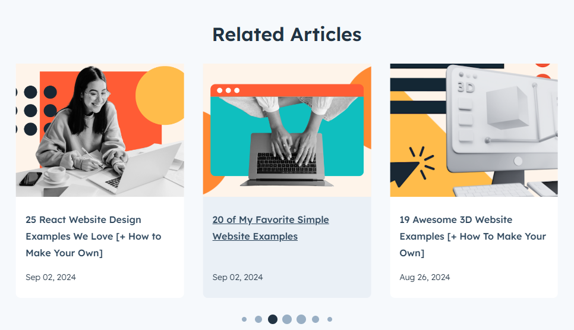

"Building even a simple HTML website can feel overwhelming if you haven’t done it before. In my experience, diving into examples can help make it feel less daunting"
"A successful HTML page example provides inspiration as you craft your own site and an example of what a successful site looks like in practice. That’s why it’s worthwhile to take a look."
Build your website with Hubspot's Free CMS Software"One of the cool things about learning HTML is that you can take inspiration from any of the millions of public websites up and running right now. And not just that — you can also peek at the underlying HTML of these websites to find out how they’re built, then use those same techniques to build your own projects.In this post, I‘ll share some stunning website examples that leverage HTML to its fullest potential. Beyond that, you’ll also learn about the basics of HTML websites, how to build your own simple HTML website, and some ideas for differeant types of websites you might want to create. By the end of this post, you’ll have a robust understanding of the best HTML page examples as you embark on your journey to craft your own.
.png)
"HTML, which stands for Hypertext Markup Language, is the primary language of the World Wide Web. An HTML document sets the content and structure of a web page. When you view a page in your browser, what you’re looking at is your browser’s interpretation of an HTML file that was retrieved from a web server
HTML is almost always used in conjunction with two other front-end languages: CSS and JavaScript. CSS (Cascading Style Sheets) is a language that controls the styling of a web page, including colors, fonts, and layouts. JavaScript is a programming language that enables more complex client-side features like interactive elements and animations.
The most recent numbered release of HTML is HTML5. Released in 2008, HTML5 notably contained several improvements to handle multimedia content like audio and video and semantically rich elements to describe page structure.
Going forward, there will be no more numbered version numbers for HTML. That means there will be no HTML6, and HTML5 is now called “HTML.” However, a number of improvements and enhancements have been released since HTML5 came out in 2008.
If you want to know more about HTML and how to write it, I recommend starting with our ultimate guide to HTML. You’ll learn everything you need to know to understand this post in its entirety.
Because every website is written in HTML, regardless of the complexity of the site or the number of technologies involved, it’s a good idea to immerse yourself in it. And yes, this is true even if the website uses server-side languages like PHP (such as WordPress ). With a tool like WordPress, the web server will process the PHP and query the site's database to generate the finished HTML document to deliver to visitors' browsers.
You can take any page and lift up the hood to see the HTML, CSS, and JavaScript code that bring it to life. Later in this post, I’ll review some of the ways designers and developers harness HTML in their creative works.
.png)
To get comfortable with HTML (along with CSS and JavaScript), I think it’s a good idea for you to create a website or two from scratch.Even building a relatively simple HTML website can help you learn how HTML works and provide you with a solid foundation before you move on to more advanced projects.
Here are some ideas for beginner-friendly simple HTML projects you can create:
To get started creating your first HTML site, I recommend following this excellent tutorial from freeCodeCamp.
As you grow more comfortable with HTML basics, you can begin to branch out into bolder, more unique design choices. But still, even elaborate websites can often be boiled down to a handful of HTML features working together to make a cohesive experience.
Next, I’ll walk you through examples of HTML websites that use elements creatively. I’ll also help unpack what makes them tick.
What I like: Gloutir is a design and development studio based out of Houston, Texas, that features a vibrant, immaculately crafted website. While the hero section isn‘t anything too crazy, you’ll experience tons of interesting effects as you scroll down the page.
At first glance, this site may look technically complex. However, you can achieve most of the effects with plain HTML and CSS. While there’s an occasional JavaScript-powered effect (for instance, animated text and a card slider), a lot of this site’s appeal comes down to smart choices of colors, fonts, and images.
It’s worth digging into the page's source code if you’re curious. For example, when I checked out the code, I could see that Gloutir used Webflow to build its site and some of the different HTML techniques that the site relies on.
Check out our guide to the “inspect element” tool to learn how you can do the same.
If you want to inspect the code of a website, my experience is that Chrome offers the best developer tools (like “inspect element”). However, most other browsers also offer developer tools.
Pro Tip: Need help choosing a color scheme for your site? Here are a few I love
What I like: Joshua is an interactive designer who uses his own interactive Joshua‘s World website to connect with potential clients. Visitors start on a simple welcome screen but can then enter the much more engaging Joshua’s World interface.
Visitors can then “ride” around the world on a bicycle while checking out Joshua‘s various projects and learning more about his experience. I think it’s much more engaging than a traditional portfolio that lists projects as thumbnails. And, given that Joshua is an interaction designer, I love how the design really shows off what he can do.
While most of the basic content on Joshua‘s website is powered by pure HTML, the interactive elements rely on JavaScript. Joshua also uses the Sanity content management system to help him manage his site’s content.
Overall, I think that this is a great example of how you can use your website's concept to reinforce what your website is trying to achieve. Rather than just telling people about his skills as an interactive designer, Joshua shows people his skills.
Pro Tip: Consider working with a web designer to create bespoke designs for your HTML site.
What I like: Ruby on Rails is a popular open-source development framework developers can use to build server-side web applications. The Ruby on Rails website does a great job of communicating that with a clean, modern design.
especially like how the website is able to keep things interesting with its color and typography choices, rather than relying on more complex animations. The red headings give a pop of color, while the actual design is simple.
The entire site is pretty much just pure HTML with CSS styling. None of the effects that you see require JavaScript. For example, the Ruby on Rails site creates interesting hover effects using basic CSS.
I think that it‘s a great reminder that you don’t need fancy CSS and JavaScript effects to build a great HTML website. Those elements can help in certain situations, especially with engagement and storytelling (as many of my other examples show). However, they are not a requirement to build an engaging website.
Pro Tip: Make your website more engaging with thoughtful CSS animations. Here are some I love. (Don’t worry — it’s not too tricky to learn!)
What I like: Project Lima is an inclusive design initiative that launched its Understanding Neurodiversity project to educate the public about neurodivergent individuals, how they operate in society, and some common myths associated with these individuals.
I recommend giving this experience a full watch if you have the time. It’s a touching blend of illustration, visual texture, music, sound effects, and meaningful storytelling to provide a better understanding of neurodiverse people.
In particular, the website’s use of scalable vector graphic (SVG) artwork is stunning and adds a visual framework for communicating the site’s information. Each screen transitions smoothly to the next with animated graphics. As far as online storytelling goes, I think this is as good as it gets.
Pro Tip: Don’t forget that copy plays into the experience your users have on your site. This is something Understanding Neurodiversity does exceptionally well.
What I like: The HTML5 video element was another major step in making HTML more robust, with the goal of becoming the standard for playing video on web pages.
Today, many websites employ this element for auto-playing videos, fullscreen videos, and video backgrounds. Take this great example from Intelligent Video Solutions — its homepage meets you with a full-width video background and overlays text, graphics, and a gradient to smoothly transition you down the page.
"If you want to achieve a similar effect on your site, the HTML5 video element is the best way. I think that it’s a much cleaner alternative to, say, an embedded iframe from YouTube on your page.
Pro Tip: For accessibility reasons, it’s a good idea to let users pause videos and also to let them choose whether or not the video plays sound.
If you've made it this far, you might be wondering how you can create your own HTML website, like some of the examples above.
"While many of the more advanced HTML page example options require a more in-depth mastery of HTML, CSS, and JavaScript, you still have options to build an engaging website, even if you're just getting started with learning these technologies.
Here are two routes that you can use to make your first HTML site:
If you don‘t want to write all of your site’s HTML code from scratch, there are lots of static HTML website generator tools that you can use to create a basic HMTL site.
"If you still don't feel totally comfortable working with code, I think that the easiest option for most people is to use WordPress and a static site generator plugin like Simply Static.
"You can build your website with WordPress, including using WordPress themes to control the design of your site. You'll also still be able to use a lot of WordPress plugins (though some plugins won't work as a static HTML site). Then, you can export your finished website as a static HTML site using the Simply Static plugin.
All you need to do is upload those HTML files to a static web host like Cloudflare Pages or Netlify, and you will have a simple HTML website that people can access from anywhere in the world.
If you don't want to use WordPress, there are also lots of other static HTML site generator tools with varying levels of complexity — here are some of my favorites:
If you feel comfortable working with HTML, CSS, and JavaScript for your entire site, you can also code your website from scratch.
Building a simple HTML website using HTML and CSS is also a great way to teach yourself these fundamental web development languages, as I mentioned earlier.
You can use HTML code editors like Sublime Text or Atom to build your website on your local computer. Then, you just need to upload your site's static files to your favorite static website hosting service to make it live.
To help you save time, you can use a simple HTML website template or library. For example, I think the popular Bootstrap library makes it a lot easier to build a great-looking website, as it offers tons of pre-built components. This can save you from having to write every single line of HTML, CSS, and JavaScript from scratch.
I recommend checking out our guide to Bootstrap if you're interested. We also have posts on Bootstrap Buttons, building Bootstrap web forms, and overriding Bootstrap CSS when needed.
"Creating an HTML site doesn't have to be complex — and by taking a look at some HTML page examples, you can see that for yourself.
Here's an HTML page example I love that demonstrates getting started isn't as tricky as you think it will be.

On Codepen, I created an example of how you can get started building an HTML page. As you can see, it's rather intuitive.
We spend so much time on websites that we may not realize what goes on behind the scenes. But, if you understand the frameworks for your favorite websites, this gives you invaluable insight into how the best online experiences are made. With that knowledge, you can build your own online experiences that engage, captivate, and delight your new audience.
Editor's note: This post was originally published in May 2023 and has been updated for comprehensiveness.

Topics: Website desing Example
